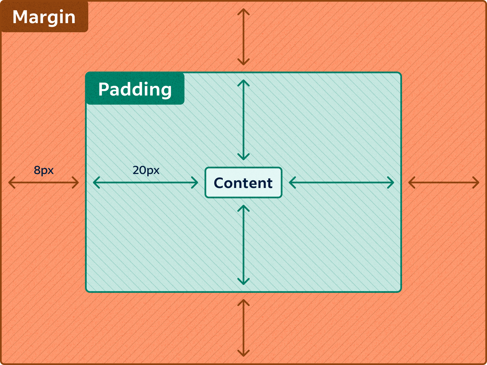

Jest to prostokątny obszar każdego elementu dokumentu HTML nazywany pudełkiem (ang. Box Model)
Zawartość |
Opis |
| Content | Zawartość elementu |
| Padding | Odstęp między obramowanie a zawartością elemetu |
| Border | Obramowanie wokół zawartości elementu |
| Margin | Pusty obszar wokół ramki, który jest przźroczysty |
Uwaga 1:
Padding, border i margin mogą mieć zerową wartość.
Uwaga 2:
Tło elementu jest określone dla wszystkich z podanych powyżej obszarów z wyjątkiem marginesów zewnętrznych, które zawsze są przezroczyste (transparent).

Padding określa przestrzeń wokół danego elementu, np: <p> lub <div> , natomiast margines przestrzeń pomiędzy elementami.

Jak widać na rysunku, padding oznaczony jest kolorem niebieskim. Określa on wielkość przestrzeni wokół elementu <p>. Element ten posiada również margines zaznaczony kolorem pomarańczowym. Jest to odległość od brzegu elementu <body>.